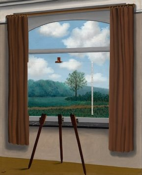

The Human Condition
René Magritte · 1933 · Oil on canvas · 100 × 81 cm · National Gallery of Art, Washington
In copyright. Look and learn: shown for study, not for download.
Magritte gave this title to four works: this painting, completed in 1933, a second painting completed in 1935 and now in Geneva, a drawing kept at the Cleveland Museum of Art, and a picture in the Norfolk Museum Collections. He explained the 1933 picture in a letter to the Belgian poet Achille Chavée.